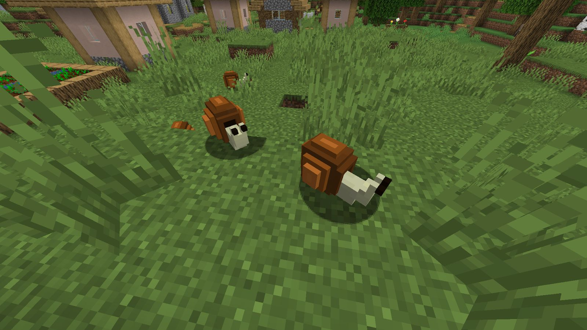

Ye Olde Snails is a WIP minecraft mod I am making with a few friends. The mod is based off of illuminated manuscripts that depicted giant snails fighting knights. I think this concept fits really well into the fantasty style of Minecraft while also staying light-hearted. So far we have implemented a common snail mob, some basic crafting items, and a set of armor and weapons. I personally have done texture art, 3D modelling, and some code implementation.
